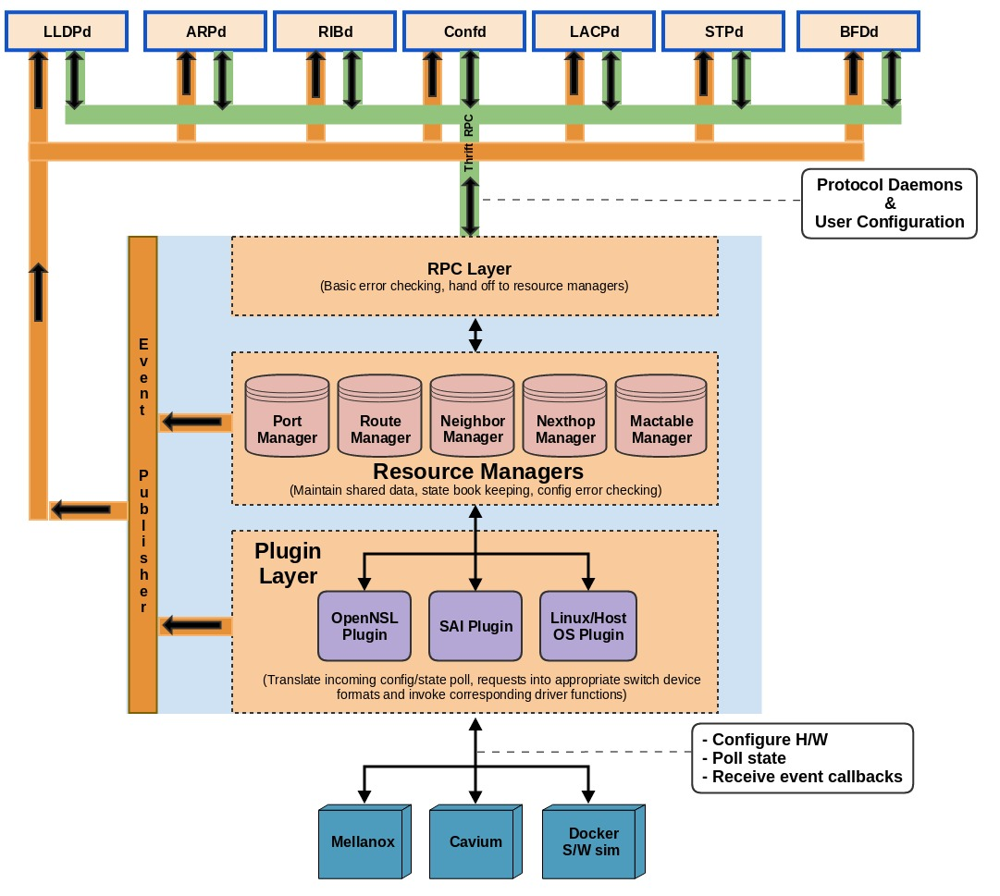

Welcome to FlexSwitch ASICd’s documentation!¶
Overview¶
Snaproute’s asic daemon serves as a hardware abstraction layer (HAL). A common northbound API interface is presented to all protocol daemons. This interface allows provisioning a range of packet processing ASICs such as Broadcom, Mellanox, Cavium. Support for software simulation with docker instances is also provided.
Software Architecture¶
Northbound interface :¶
ASICd’s northbound interface is implemented using thrift RPC. This is the interface that is used by users/protocols to apply configuration.
Core resource managers :¶
The core infrastructure within Asicd is distributed across multiple resource managers. Each of these individual resource managers support Create/Retrieve/Update and Delete operations on the corresponding resource. These resource managers also maintain any relevant state data for each corresponding resource.
Plugins :¶
ASICd uses a plugin based approach to effectively abstract away differences between ASICs from multiple vendors. The following plugins and asic vendors are currently supported
OpenNsl (Broadcom)
SAI (Mellanox, Barefoot)
Softswitch (Linux host)
Notifications :¶
ASICd supports notification of asynchronous events. The notification engine employs a nano message based publisher.
Notifications for the following events are currently supported -
Port operational state changes
Vlan/Lag interface creation/deletion
IP interface operational state changes